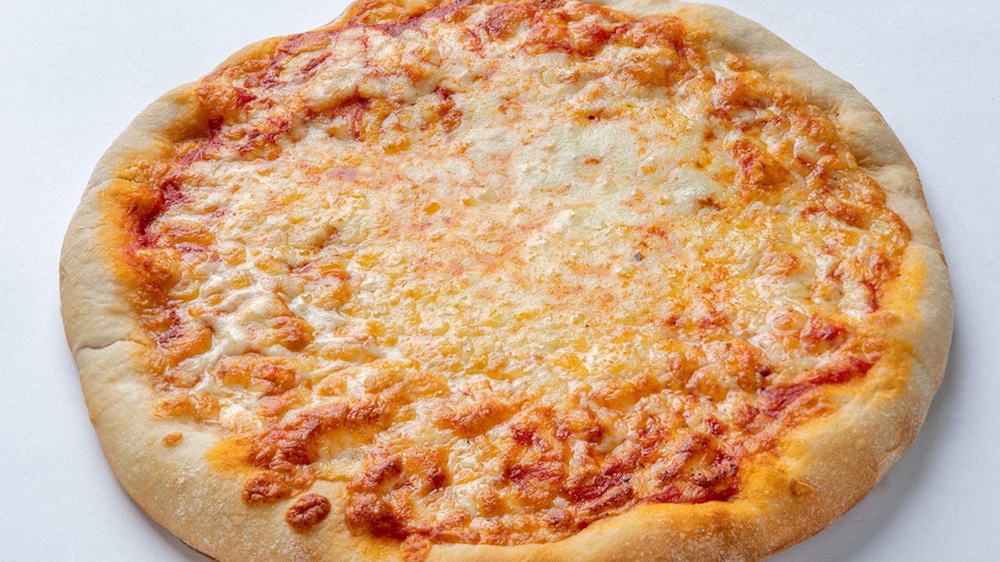

Pizza Margarita
Autor:Luigi Bianchi
(DNI: 77889900F)
Ingredientes:
- Harina - 500gramos
- Tomate - 200gramos
- Queso mozzarella - 300gramos
Pasos:
- Preparar la masa con harina, agua y levadura.
- Extender la masa y añadir el tomate y queso.
- Hornear a 200°C durante 15 minutos.